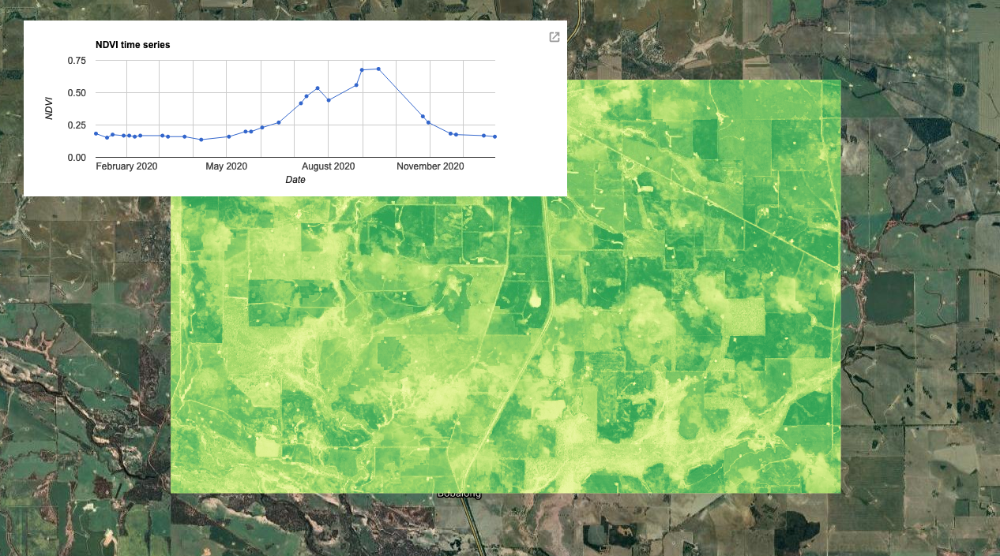
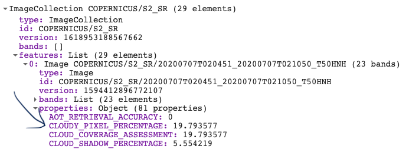
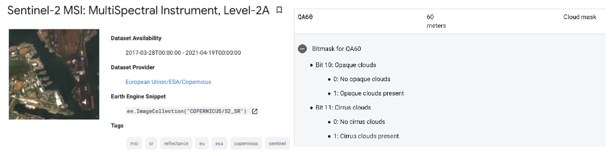
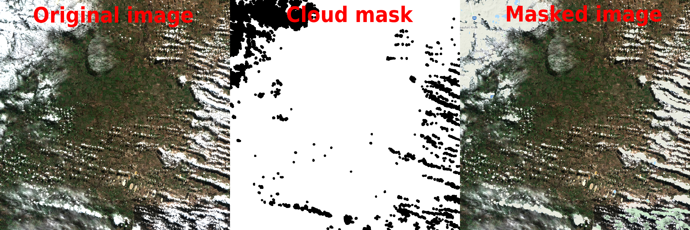
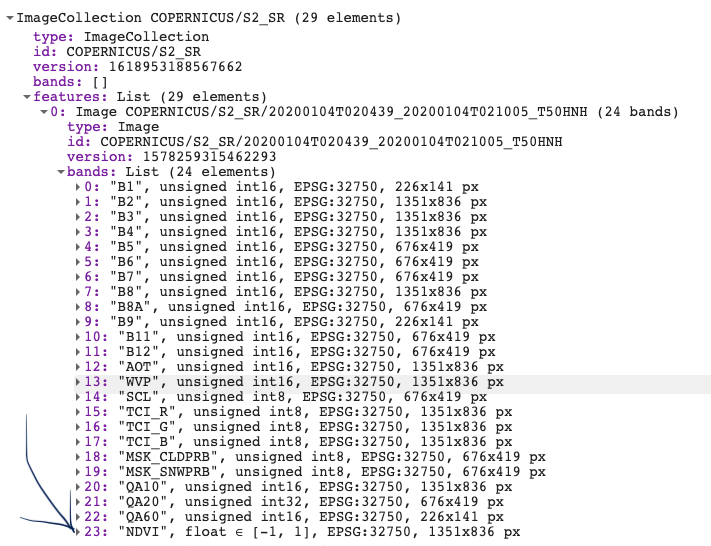
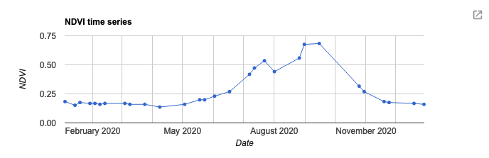
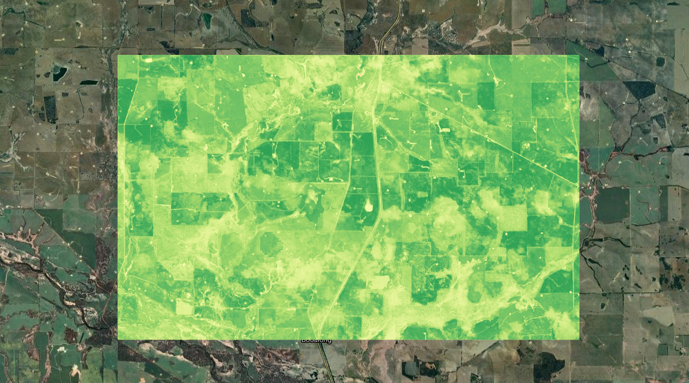
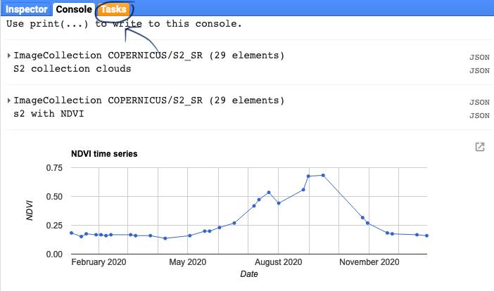

GOOGLE EARTH ENGINE FOR ECOLOGY AND CONSERVATION
Practical 3: NDVI time-series over a single region
by Joseph White
Learning Objectives
By the end of this practical you should be able to:
- Mask clouds from an image collection
- Write a custom function
- Map it over a collection
- Plot a time-series
- Export data as a csv or image
Access the completed practical script here.

Introduction
Vegetation indices, such as NDVI and EVI are foundational for understanding phenological patterns through remote sensing. NDVI can help us differentiate vegetation from other land use classes, as well as assess patterns in the vegetations' state. It is broadly used across ecological and agricultural studies that can help to simplify the complexities of multi-spectral remote-sensed imagery. In this practical, we will explore NDVI using the Sentinel-2 surface reflectance imagery. We will learn how to build our own functions, mask clouds over your image collection, calculate NDVI for your image collection, and lastly export your images and results in a csv format.
Importing & Pre-processing
We start by creating a polygon. This can be done by using the polygon tool in the GEE code editor. We then filter the ImageCollection by time and space. Lastly, we filter it by the amount of cloud cover to remove excessively cloudy scenes. This is done using the image property called 'CLOUD_COVERAGE_PERCENTAGE'.

// Create image collection of S-2 imagery for the full year of 2019 var s2 = ee.ImageCollection('COPERNICUS/S2_SR') //filter start and end date .filterDate('2019-01-01', '2019-12-31') //filter according to drawn boundary .filterBounds(geometry) // pre-filter to get less cloudy images (only keeps images with less than 20% cloudy pixels) .filter(ee.Filter.lt('CLOUDY_PIXEL_PERCENTAGE',20)) ;
Find the Sentinel-2 surface reflectance dataset here: Sentinel-2 MSI: MultiSpectral Instrument Level-2A
Pre-processing
We will now use our first function. This function creates a cloud mask based on the metadata within each image of the collection. Look up the band information in the Sentinel-2 metadata. We create a variable name for the overall function called maskS2clouds. We then create a set of internal functions to apply to each image in the ImageCollection. We extract information on both dense and cirrus
clouds from the Sentinel-2 metadata. Each cloud type is stored in Bit format (bit 10 & 11, respectively) and we use the bitwiseAnd() function to extract this. Once the two cloud types are added together, we then mask the original image where cloud has been detected.
Make sure the new variable names within your function are consistent.
This is the default cloud masking process provided by GEE for Sentinel 2 images, though there is now an alternative, where you can use the Sentinel-2 cloud detector library (see here for more information: Sentinel-2: Cloud Probability.
We then use the map() function to apply a built-in algorithm or our own function over the Sentinel-2 collection.

// Function to mask cloud from built-in quality band // information on cloud var maskS2clouds = function(image) { var qa = image.select('QA60'); // Information in this band is stored in Bits. Bits work in multiples of 2's // Bits 10 (2^10 = 1024) and 11 (Bits 2^11 = 2048) are clouds and cirrus, respectively. // These need to be set to zero i.e. .eq(0) to represent clear conditions var clouds = qa.bitwiseAnd(Math.pow(2, 10)).eq(0); var cirrus = qa.bitwiseAnd(Math.pow(2, 11)).eq(0); // bitwiseAnd() is the function to recognise we are referring to the 2^x stored Bit var mask = clouds.and(cirrus) // add the two cloud layers together. return image.updateMask(mask); }; // run the mask cloud function over each image in the s2 collection var s2_cloudmask = s2.map(maskS2clouds);
The above code is complicated, so let’s make sure we are happy with the output. Let’s do this by plotting an unmasked vs. masked image.

// Let's take a look at what this function is doing... // Print the unmasked dataset sorting it from the most to least cloudy image print(s2.sort('CLOUDY_PIXEL_PERCENTAGE', false), 'S2 collection clouds'); // false sorts the collection in descending order // We can select the most cloudy image by sorting the list in descending // order and selecting the first image Map.addLayer(s2.sort('CLOUDY_PIXEL_PERCENTAGE', false).first(), {min:0, max:3000, bands:['B4','B3','B2']}, 'Cloudy image first'); // Plot the cloud mask layer QA60 Map.addLayer(s2_cloudmask.sort('CLOUDY_PIXEL_PERCENTAGE', false).first().select('QA60'), {min:0, max: 1}, 'Cloud mask', false); // Let's now plot the image with the cloud mask applied Map.addLayer(s2_cloudmask.sort('CLOUDY_PIXEL_PERCENTAGE', false).first(), {min:0, max:3000, bands:['B4','B3','B2']}, 'Cloud masked image');
Processing
Next we will make a custom function to clip the image to our AOI and add a band to the image containing NDVI values. We will use the normalizedDifference() function and apply it over the near infra-red and red bands. Make sure you use the correct Bands here. For Sentinel-2 band B8 = NIR and B4 = RED. Lastly, we will rename the new band to ‘NDVI’. Note that the function is now nested inside the map function. Print out the new ImageCollection to view the new band.

var s2_ndvi = s2_cloudmask.map(function(image) { var s2_clip = image.clip(geometry) return s2_clip.addBands(s2_clip.normalizedDifference(['B8', 'B4']).rename('NDVI')) }); print(s2_ndvi, 's2 with NDVI');
Visualisation
Next we will create a time-series plot over the NDVI band of the ImageCollection. This is done using the ui.Chart group of functions. The function you chose depends on the type of data you are using. In this case, we are running an image series over a single region, so we will use ui.Chart.image.series(). The primary inputs here are: the ImageCollection, area of interest (geometry), a reducer, the scale and the x-axis property (which defaults to ‘system:time_start’). In GEE, calculations that summarise your data spatially are called reducers and can be called using the ee.Reducer group of functions. Here we will use ee.Reducer.median() to calculate the median NDVI values across our area of interest. Lastly, we can specify details for the chart, including the type of chart and then label options. Run print() to see the output of the chart in your console. Hover your cursor over the chart to see interactive details. For more details on customizing your charts see: https://developers.google.com/chart/interactive/docs

var plotNDVI = ui.Chart.image.series(NDVI, geometry, ee.Reducer.median(), // we use an image based chart, with image, geom & reducer 10, 'system:time_start') // scale, x-axis property .setChartType('LineChart').setOptions({ title: 'NDVI time series', hAxis: {title: 'Date'}, vAxis: {title: 'NDVI'}, legend: {position: "none"}, lineWidth: 1, pointSize: 3 }); // Display the chart print(plotNDVI);
There are many other chart types available. To look at all of the available options see: customisable charts
Let's visualise the seasonal highs and lows of NDVI. To do this we will need to summarise the ImageCollection using a chosen summary statistic. In this case, we use median()
// Filter NDVI image for January and August, respectively and create NDVI mean composite image var NDVI_jan = NDVI.filterDate('2020-01-01', '2020-02-01').median(); var NDVI_aug = NDVI.filterDate('2020-08-01', '2020-09-01').median();
As shown in Practical 1, there are lot of different options for creating your own customisable palettes. However, there are also
several palettes built into GEE. To look at all of them go here: EE palettes
These palettes were created by a GEE user under the name 'gena' and turned into a package. To load external packages we use the
require() function. Follow the details on the EE palettes link to load different colour palettes into your GEE session.
var palettes = require('users/gena/packages:palettes'); var ndvi_pal = palettes.colorbrewer.RdYlGn[9];
Now add the seasonal highs and lows to your map:

// Display NDVI results on map Map.centerObject(geometry); // Add layers to the map Map.addLayer(NDVI_jan, {min:0, max:1, palette: ndvi_pal}, 'NDVI Jan'); Map.addLayer(NDVI_aug, {min:0, max:1, palette: ndvi_pal}, 'NDVI Aug');
Exporting data
We'll now go through three ways to export your data
1) The first option is to export the data directly from the chart produced earlier and save it as a csv. Do this by selecting the pop out window.
2) Convert the ImageCollection to a FeatureCollection and then export it as a csv
This method is done using the Export functions. There a few options on how to export your data and a few places to export it to. This includes exporting to your Google Drive account, to Cloud Storage or as an Asset within your GEE acount. Unfortunately there are no easy options to directly download data from GEE (with a few exceptions).
Firstly, we need to create a function that extracts the dates and NDVI values from the ImageCollection. Secondly, we then create a feature for each image (with a null geometry) and place the dates and NDVI values inside each feature. We then map() the function over the ImageCollection.
// Create a function that takes an image, calculates the median over a // geometry and returns the value and the corresponding date as a feature. var convert_to_FC = function(image){ var date = image.get('system:time_start'); var value = image.reduceRegion(ee.Reducer.median(), geometry).get('NDVI'); var feature = ee.Feature(null, {'system:time_start': date, 'date': ee.Date(date).format('Y/M/d'), 'value': value}); return feature; }; // Apply the function to each image in the NDVI ImageCollection. var NDVI_table = NDVI.map(convert_to_FC); print('NDVI table:', NDVI_table);
We then export the FeatureCollection or table to our Google Drive account, specificying the collection, variables (selectors), providing a file name (description) and a fileFormat (which defaults to CSV)
// Export the time series as a csv. Export.table.toDrive({ collection: NDVI_table, selectors: 'date, value', description: 'NDVI_time_series', fileFormat: 'CSV' });
3) Export the NDVI map as a raster
Here we use one of the earlier mapped NDVI visualisations and export this directly to our Google Drive account. Downloading the image may allow flexibility in analysis or visualisations in different softwares.
Export.image.toDrive({ image: NDVI_aug, description: 'NDVI_Aug_example', scale: 100 // this can go down to 10, to match S2 original resolution });
Once you have run the Export functions, you will need to go to your task tab to execute the task.
Practical Assignment #3
// Use the Sentinel-2 data to explore the NDVI trends in a region/date that interests you // .............................................. // Delete the geometry, and create your own geometry // Tip: use a smaller geometry for shorter processing times // Note: bigger geometries have issues of their own, which you can explore // .............................................. // Provide some commentary (2-3 sentences) with your assignment on the NDVI trends in your region // ..............................................
Sharing your code to complete the practical assignments To complete the practical exercise below you need to know how to share your scripts with us. Simply click on "Get Link" - the actual button NOT the dropdown arrow - Then click the "Click to copy link" button and paste that in an email to us ots.online.education@gmail.com. !NB! Please remember to add the prac number in the header.
Please share your feedback on this practical by completing this quick (2 min) survey. Thank you!